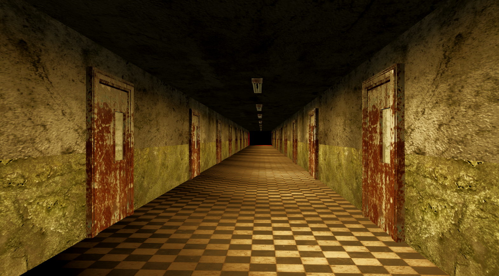
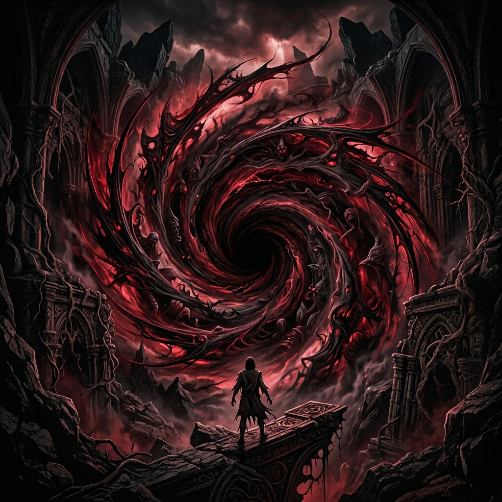

Exploração opressiva
Corredores abandonados, alas bloqueadas e salas que parecem mudar quando você deixa de olhar.
Prontuário narrativo
Alice perdeu tudo aos 15 anos.
O Instituto Tarrant prometeu cura.
Mas algumas memórias nunca deveriam voltar.
Quando a porta abrir, talvez ela não reconheça a própria culpa.
Sistema de jogo
Corredores abandonados, alas bloqueadas e salas que parecem mudar quando você deixa de olhar.
A ameaça não corre apenas atrás de Alice; ela antecipa decisões e ocupa memórias antes delas acontecerem.
Enigmas baseados em percepção, culpa, prontuários médicos e pequenos detalhes ambientais.
Recursos escassos, violência desconfortável e confrontos que parecem mais sintomas do que vitórias.
Transições entre 2D e 3D, cortes de câmera e espaços impossíveis reconstroem a verdade.
Documentos, som, arquitetura e silêncio contam mais do que qualquer explicação direta.
Elenco
Instituto Tarrant
A instalação combina brutalismo médico, alas psiquiátricas e laboratórios subterrâneos. O lugar parece documental à distância — e impossível quando observado de perto.
Galeria


Trailer
Acompanhe o projeto
O ARG é uma experiência separada dentro do Tarrant OS.